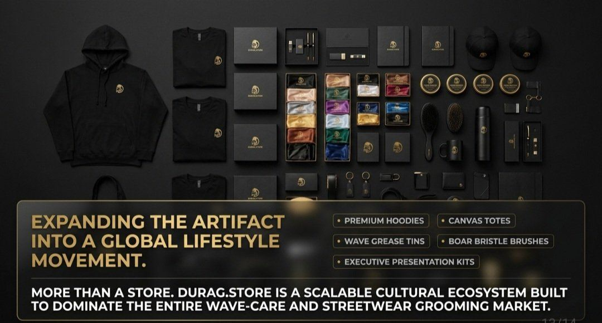

durag.store exists for one reason: the culture deserves better gear. Waves are not an accident. They are brush sessions before school, moisturiser and patience, a cap pressed down overnight and the discipline to do it again tomorrow. The durag is the tool that holds all of that work together — and too many of them are thin, short-tailed and done after a month.
The first collection is being stocked now: durags, wave caps, skull caps and compression caps chosen for the things that actually matter — fabric that lays hair down evenly, tails long enough to tie properly, stitching that survives nightly wear, and compression that holds a pattern without punishing your head. Nothing is for sale yet; the drop opens to launch-list members first, and prices go live with the products.
Every durag in the line is built to one spec, taken from the reference durag the collection was engineered around: a 100 cm extra-long tail, a 49 cm body and a 17 cm band. The textile is dual-layer — a non-absorbent silky inner lining that locks oils and hydration against the scalp, and a high-density outer shell for 360-wave compression. The straps are Zero-Line Double-Wrap: precision-cut, extended-length and extra-wide, made to hold for 8 hours without tension marks on the forehead. Care is simple — cold wash and air dry keeps the compression alive the longest.
The lines carry their own names. Velvet — Onyx Velvet, Royal Velvet, Imperial Velvet: stretch plush velvet outer with a silky satin inner, heavyweight and high-density. Silky — Iceman Platinum Silk, Royal Silky, Ultra-Silky Satin: high-density polyester micro-satin, feather-light with a high shine. We sell the silky line as silky satin, honestly — the fabric is polyester satin, not silk. The Lucid line is ultra-sheer mesh for breathable, all-day wear. Bonnets are double-lined, non-slip satin; the jumbo dreadlock cap is built expandable for long locs.

The store is not the only thing here. The Wave Lab is our free education hub — 100+ guides on tying, brushing, washing, wolfing and wave training, written for every hair type and every stage, from a first tie to a contest wave check. The guides are free whether or not you ever buy a durag; they exist because the routine matters more than the gear, and good gear only makes sense once the routine is right.

The Gold Standard. Heritage quality for the global wave culture — engineered in Brampton, worn everywhere.
The first collection is being stocked now. Join the list on the home page and you’ll hear about it before anyone else — one email at launch, one at each restock, and code GOLDSTANDARD locks 15% off your first order.